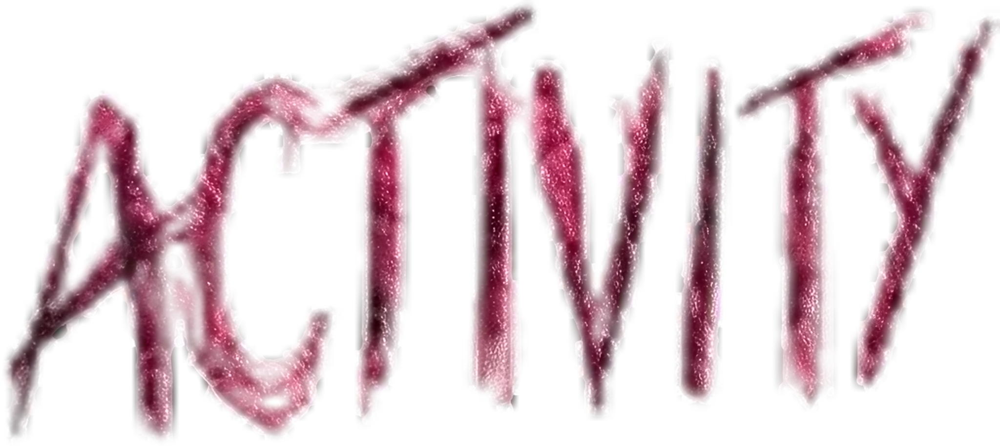

Un network musicale europeo per chi la musica la vive dal vivo: artisti e band, ascoltatori curiosi, gente che ai concerti non manca mai. Colleghiamo le scene di tutta Europa e ti mostriamo dove suonare, dove andare stasera e chi vale la pena ascoltare.
Manifesto
"Dead People Activity nasce dal basso: da chi la musica dal vivo la suona, la ascolta, la insegue di locale in locale. Non è una rivista né un'app: è l'inizio di una comunità europea che vuole crescere e diventare grande, un pezzo alla volta e con le proprie mani. Niente padroni, niente algoritmi: solo persone, concerti e scene che si tengono vive a vicenda."
Questo è solo il primo passo, e c'è posto per chiunque voglia esserci: ragazzi alla prima serata e gente che gira per club da vent'anni, artisti e ascoltatori, chi organizza e chi semplicemente non manca mai. Se ti muove la musica indipendente, questo posto è anche tuo. Il resto lo costruiamo insieme.
Cosa Facciamo
01 / La Mappa
Una mappa dei concerti in tutta Europa: serate, festival, DJ set e live. Cerchi la tua città e scopri dove andare stasera o nel weekend.
02 / Le Storie
Interviste vere, recensioni oneste e racconti dai club e dagli spazi autogestiti. Le voci di chi la scena la fa, senza filtri e senza marchette.
03 / La Rete
Artisti, ascoltatori e gente dei concerti che si trovano da una città all'altra. Le scene locali smettono di essere isole.
La Rete in Numeri
Ultimi Articoli
Rumore dall'asfalto: perché nasce Dead People Activity
Perché serve una mappa e un archivio per la musica dal vivo che rischia di sparire.
LEGGI →La tua prima serata autogestita: guida pratica
Spazio, budget, line-up, promozione e cassa: come organizzare un concerto dal niente.
LEGGI →Autoprodurre musica: cassette, vinile e CD senza svenarsi
Quale supporto scegliere, quanto costa, la grafica DIY e dove vendere le tue copie.
LEGGI →La Mappa del Rumore
La rete della musica dal vivo su una mappa. Concerti, serate, festival e DJ set in tutta Europa: scegli la tua città e scopri chi suona stasera o dove andare nel weekend.
Eventi in Evidenza
Prossime date dalla rete. Aggiornate dall'archivio eventi.
Gli eventi vengono aggiornati ogni lunedì tra le 9:00 e le 11:00.
Caricamento eventi…
In Arrivo
La piattaforma cresce a fasi. Queste sezioni stanno per arrivare. Per ora esplora la Mappa degli eventi e leggi gli Articoli.
Archivio & BURIED
Schede di artisti, band e realtà scomparse da preservare.
Artisti & Emergenti
Database e vetrina degli artisti della scena.
Playlist
Selezione settimanale su Spotify.
Shop
Autoproduzioni, fanzine, vinili, cassette.
Community
Percorsi per artisti e ascoltatori.
Newsletter
Concerti nella tua zona, ogni settimana.